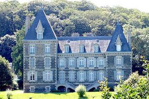
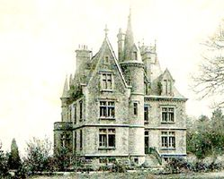

Recensement Jean-Claude Truffet


| Département | 29 — Finistère |
| Canton | Pont-de-Buis-lès-Quimerc |
| Commune | La Martyre |
| Type d'édifice | Château |
| Période d'origine | XVII-XIX |
| Coordonnées GPS | 48° 27' Nord, 4° 10' Ouest |
Deux châteaux à la Martyre; Guilly, et Poulbroc'h. GUILLY, un édifice ancien, antérieur au XVIIe siècle, a été agrandi et rhabillé dans la seconde moitié du XIXe siècle. La demeure appartient à M. de Brémont d'Ars au début du XXe siècle. Bâtiment de plan en L, de style néo-gothique, néo-médiéval. Le corps de logis principal, allongé est flanqué d'une aile en retour d'équerre, une tour circulaire étant placée à l'angle des deux bâtiments, tour crénelée sur la façade postérieure. Elévation à travées en moellon avec encadrements de baies, chaînes d'angle, corniche, lucarnes et ornements en pierre de taille. POULBROC'H , François de Keroudault, seigneur de Poulbroc'h et Jérôme de Keroudault font du ministère dans la trève, le premier de 1639 à 1675, date de sa mort, le second de 1640 à 1655. Aux de Keroudault succèdent, par alliances, les de Penfeunteniou, Saisi de Kerampuil, le Forestier de Quillien, de Coattarel. Voici quelques actes concernant ces familles relevés sur les registres : - Le 17 Novembre 1681, écuyer Ronan de Penfeunteniou, de la paroisse de Plouédern, épouse Françoise de Keroudault, fille de Louis et de Marie de Trédern, dame de Kerbernard, héritière principale de Poulbroc'h. Guillaume Cren, vicaire général de Léon, bénit le mariage et signe. Le 6 Décembre 1763, noble écuyer Jean-François-Paul-Henri de la Cour de Bellevoy, lieutenant de vaisseau et capitaine d'artillerie, épouse dame Véronique de l'Isle de Penfeunteniou, avec la permission du roi, signée par le duc de Choiseul.
POULBROC'H, en 1767, on note les bans d'écuyer François-Louis de Penfeunteniou, seigneur de Poulbroc'h, officier d'infanterie, bataillon de Carhaix, et de Céleste Cabon de Kerandraon ; en 1808, les bans de Pierre-Marie Saisi de Kerampuil, ancien capitaine des Chasseurs de Flandre, chevalier de Saint-Louis, et de dame Jeanne-Véronique de Penfeunteniou de Poulbroc'h. Le 7 Août 1832, mariage d'Augustin-Marie-Marc de Guengo Tonguédec (Tonquédec ?), de Morlaix, avec Marie-AgatheFrançois Saisi de Kerampuil. L'abbé de Lansalut, chanoine de Quimper et de Léon, recteur de Garlan, bénit le mariage. Le 6 Juin 1838, mariage de M. Armand-Joseph-Marie Le Forestier de Quillien, fils de sieur FrançoisMarie-René Le Forestier de Quillien, capitaine au régiment d'Aunis, et de dame Marie-Claude-Thérèse Jouan de Kervénoël, né à Daoulas, et domicilié à Saint-Pol de Léon, avec Marie-Pauline-Henriette Saisi de Kerampuil, le 6 Juin 1838.château construit à la fin du XIXe siècle sur le site d'un ancien manoir ; la propriété appartient à M. Le Forestier de Quillien au début du XXe siècle. Édifice de plan massé en L ; la façade antérieure est marquée par une aile en retour d'équerre formant pignon et une tour circulaire placée dans l'angle du corps de logis ; la façade postérieure est encadrée d'un pavillon saillant et d'une échauguette. Élévation à travées, en moellon avec soubassement, bandeaux horizontaux, encadrements de baies, chaînes d'angle, corniche et lucarnes en pierre de taille.
Guuilly; Famille de M. de Brémont d'Ars Poulbroc; Famille de M. Le Forestier de Quillien
"
Deux châteaux à la Martyre; Guilly, et Poulbroc'h. GPS : 48° 27' Nord, 4° 10' Ouest